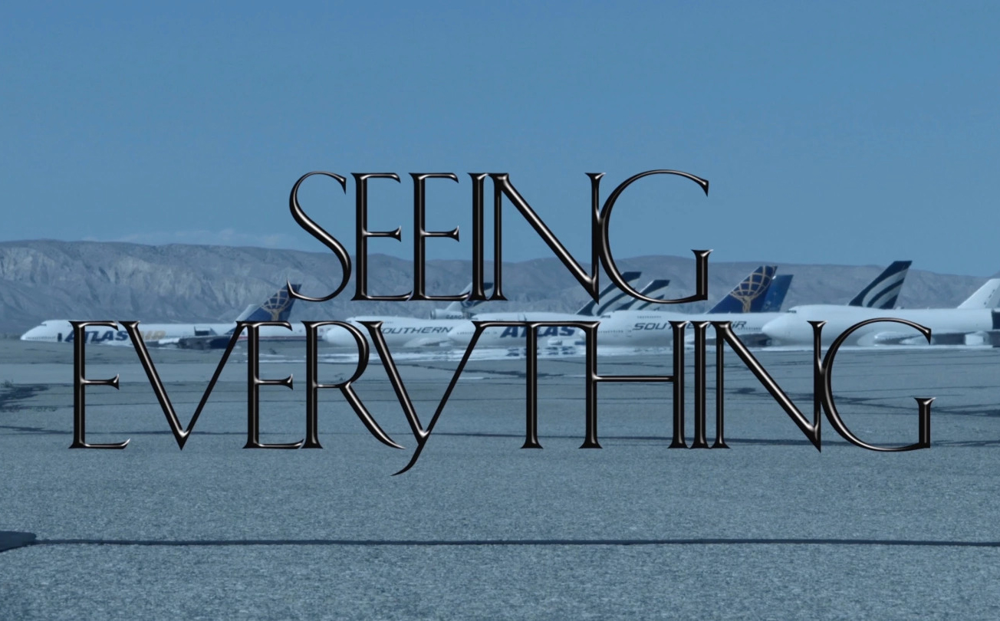

BY THE RISING
ANTI-UTOPIA
In a dystopia, the canonical example is that of 1984. There is total surveillance. Information is gathered about everyone, and this information is used to decide who you are or how to behave. We seem detached from managing our personae in the public world, and managing how we define ourselves. The rhetoric of “Big Brother technologies” is easily—and frequently—ridiculed as “sinister conspiracies”, but the paradoxical result is that genuinely worrisome developments can seem “not so bad” simply for lacking the overt horrors of Orwell’s dystopia. Of course the perceived meaning may depend on the onlooker’s expectations, but now the cycle seems to expand—from utopias and dystopias, to the rise of anti-utopian dreams.
[A] Goldberg, Adele & Kay, Alan. (1977). Personal Dynamic Media.
[B] Agre, Philip. (1994). Surveillance and Capture: Two Models of Privacy.
Anti-utopian
dreams Analysis of the place of computer technology in society has often been impoverished through a bifurcation into two structurally opposed genres, which they call utopian and anti-utopian. The utopian genre (...) emphasizes good things: the amplification of various professions’ powers. The anti-utopian genre draws on a stock of cultural images of class conflict and totalitarian domination.
Just as the utopians are often accurate in reporting the benefits of computing, these critics are surely not hallucinating the instances of computer-mediated domination they describe.
Nonetheless, this picture provides no notion of the larger dynamics that capture processes will interact with. Indeed, without a worked-out conception of how real activities might actually be reorganized during the various phases of the capture cycle, this sketch of a hypothetical world of total capture is hard to distinguish (...) from the utopias and dystopias associated with the surveillance model.
[B]

Stills from the film The Sprawl: Propaganda
About Propaganda (2016), by Metahaven